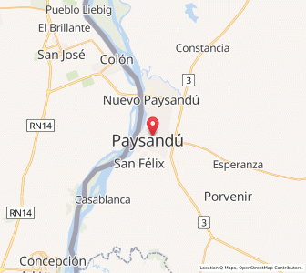

TRASLADO 1
Rastreo en Vivo:

- Estado
- En curso
- Fecha y hora de inicio
- Origen → Destino
- Hospital de ClínicasSanatorio de Velen
- Conductor
- Benjamín Genolet
Información del paciente
- Nombre
- Juan Pérez
- Edad
- 45 años
- Sexo
- Masculino
- Documento / Historia clínica
- CI 4.123.456-7
- Acompañante
- Nicolás Peluffo
- Notas
- Paciente estable. Requiere monitoreo.
Detalles del traslado
- Motivo del traslado
- Estudios especializados
- Tipo de traslado
- Programado
- Prioridad
- Normal
- Acompañado por médico
- Sí
- Equipamiento especial
- Monitor cardíaco, O₂, camilla
- Notas adicionales
- Traslado para estudios de cardiología.
Ruta del traslado
- Distancia total
- 8,7 km
- Tiempo estimado
- 40 min
- Tiempo transcurrido
- 12 min
Línea de tiempo
- Traslado iniciado
Inicio en Hospital de Clínicas.
- En camino
Ambulancia en ruta hacia el destino.
- Llegada estimada
Tiempo previsto de llegada al destino.
- Traslado finalizadoPendiente
Se finalizará al llegar al destino.
Acompañantes y personal
- Conductor
- Benjamín Genolet
- Acompañante 1
- Nicolás Peluffo
- Acompañante 2
- —
- Médico a cargo
- Dr. Martín López